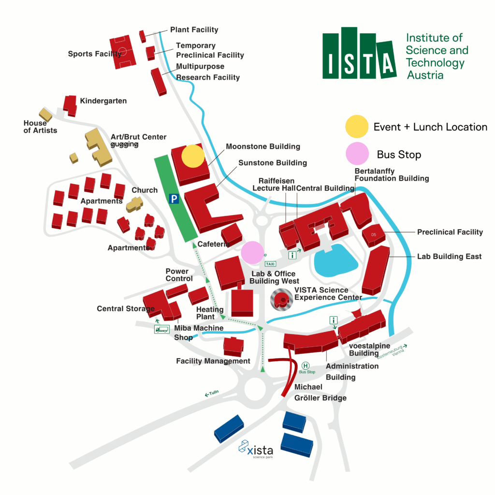

The sixth edition of the Iris workshop will be held at ISTA in Vienna, Austria. It will be focused on Iris-related research, so as to allow for in-depth talks and discussions. The three-day-long program, with talks, extends from Monday, June 8 until Wednesday, June 10. Participants are encouraged to stay for one or two more days, on June 11 and June 12, for further informal discussions and interaction.

There will be lunch provided at the workshop and there will be an excursion followed by the workshop dinner. Details will follow.
Registration
Details of registration will follow.
Program
Details of the program will follow.
Location

The workshop will be held on the campus of Institute of Science and Technology Austria (ISTA), located in Klosterneuburg, Austria. Klosterneuburg is a historical town in Lower Austria, 20 minutes from Vienna. More information about the city and visitor information, can be found on the official website of the town.
The conference will take place in the Moonstone Building in the Seminar Center.
Practical information
Transportation
Shuttle Bus (free of charge)
In the morning and evening a shuttle bus will be provided between ISTA Campus and Schwedenplatz in Vienna, with a stop at U4 Heiligenstadt and Stadtplatz in Klosterneuburg.
Public transportation (Klosterneuburg)
You can also use the public transport services to Klosterneuburg. The VOR website for the public transport: https://anachb.vor.at/. If the tickets are bought directly at the bus, only cash is accepted.
Click here for further information how to reach ISTA.
Accommodation
We recommend picking a hotel near the conference shuttle bus stops (Schwedenplatz in Vienna or Stadtplatz in Klosterneuburg) to facilitate the commute to ISTA. If there is interest in exploring the many culinary and cultural attractions that Vienna has to offer, we recommend picking a hotel in Vienna. We provide a number of hotel suggestions (within a walking distance from the conference bus stops):
Vienna:
- Hotel Ruby Lissi (3min to bus stop Schwedenplatz)
- Hotel Mercure Wien Zentrum (3min to bus stop Schwedenplatz)
- Kärntnerhof (3min to bus stop Schwedenplatz)
- Hotel Stefanie (3min to bus stop Schwedenplatz)
- SO/ Vienna (3min to bus stop Schwedenplatz)
Klosterneuburg:
- Hotel Schrannenhof (Enchanting building of the 15th century, located in the city center, offering the comfort of a modern 4-star house.)
- Bed and Breakfast “Alte Mühle” (Charming atmosphere, friendly service, a rich breakfast buffet and a nice garden guarantee a pleasant stay. 10 min walk to the bus stop.)
- Hotel Anker (Cosy traditional hotel with a la carte restaurant and cafe directly next to the romantic city center of Klosterneuburg.)
- ISTA Guesthouse (Located in the Central Building of the Institute of Science and Technology Austria (ISTA).)